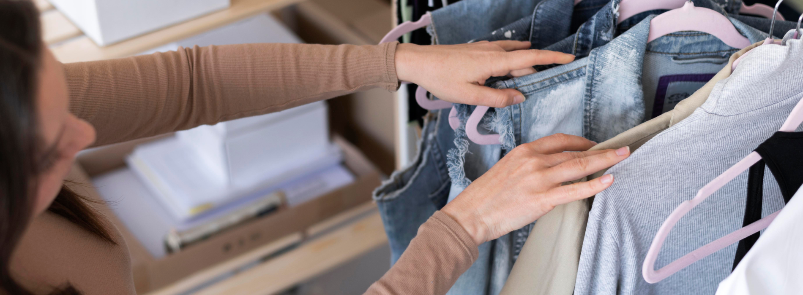

возврат и обмен
Вы можете вернуть или обменять товар, не подошедший по каким-либо причинам (фасон, размер, цвет) в течение 7 календарных дней с момента получения заказа (п. 4 ст. 26.1 Закона о защите прав потребителей). Возврат товара возможен только в случае, если указанный товар не был в употреблении, сохранен его первоначальный товарный вид, потребительские свойства, оригинальные этикетки и документы, подтверждающие покупку.
Как оформить возврат или обмен?
Для того чтобы оформить ВОЗВРАТ или ОБМЕН, необходимо:
Заполнить электронную форму;
Заполнить отрывной бланк, полученный вместе с заказом, и вложить его в отправляемую посылку;
Обратиться в ближайший офис СДЭК или Почты России (в зависимости от региона) для отправки товара на адрес распределительного центра. При отправке Почтой России потребуется приобрести упаковочный пакет. Обратите внимание, что распечатывать возвратную накладную не требуется, достаточно назвать сотруднику ее номер;
После поступления посылки на склад Lichi нашими сотрудниками будет произведена проверка товарного вида изделий.
При подтверждении сохранности внешнего вида будет выполнена одна из процедур ниже:
· В случае, если был оформлен ВОЗВРАТ — запрос на возмещение денежных средств будет передан в банк;
· В случае, если был оформлен ОБМЕН — вам будет отправлен товар, выбранный на замену возвращаемому.
Кто оплачивает стоимость доставки в случае возврата или обмена?
Компания полностью берет на себя расходы за доставку до склада и за доставку обменного заказа обратно.
Возврат товара, приобретенного в интернет-магазине, в розничный магазин невозможен.
В какой срок осуществляется возврат денежных средств?
Мы вернем полную стоимость товара (или разницу стоимости — в случае обмена) путем перевода денежных средств на ваш банковский счет в течение 10 рабочих дней с момента получения возврата.
Нашей компанией предусмотрен возврат товара ненадлежащего качества в том случае, если вам доставили товар с заводским браком, либо в ходе эксплуатации которого был обнаружен скрытый дефект.
Если у вас возникли дополнительные вопросы, пожалуйста, свяжитесь с нашей службой поддержки клиентов, которая предоставит более подробную информацию. Мы дорожим своей репутацией и трепетно относимся к каждому заказу!
электронная почта support@olso.com
телефон горячей линии +79096685555
служба поддержки в WhatsApp
онлайн-чат на сайте